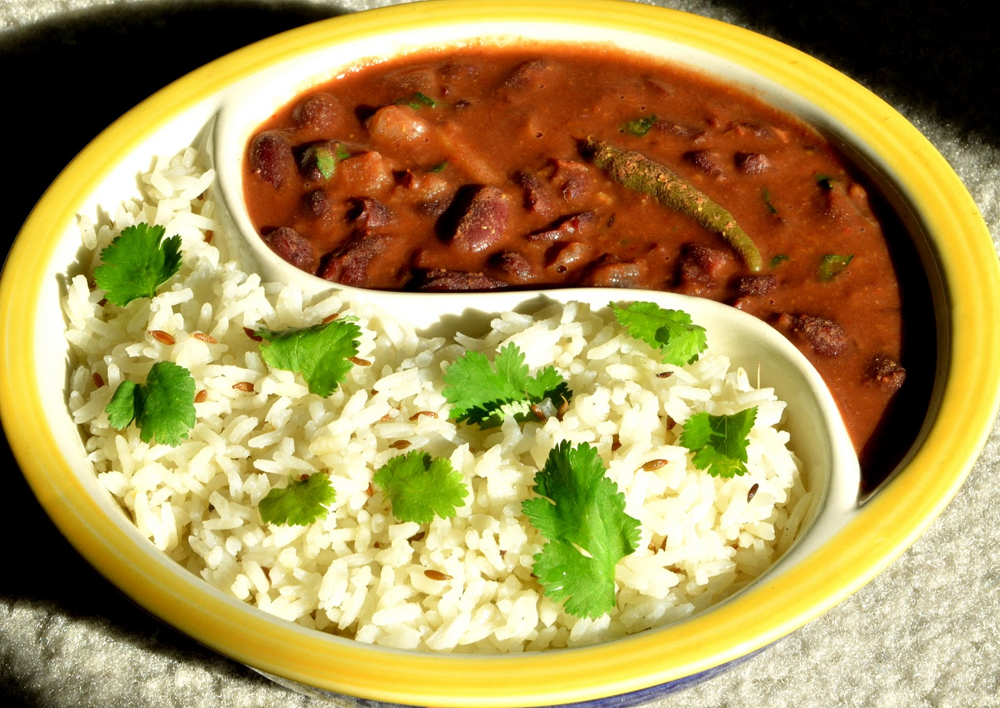

Rajma Chawal
Ingredients
- 1 cup rajma (kidney beans), soaked overnight
- 2 cups water
- 1 large onion, finely chopped
- 2 tomatoes, pureed
- 1 tbsp ginger-garlic paste
- 1 tsp cumin seeds
- 1/2 tsp turmeric powder
- 1 tsp red chili powder
- 1 tsp garam masala
- 1 tsp coriander powder
- 2 tbsp oil
- Salt to taste
- Fresh coriander leaves for garnish
- 2 cups cooked rice

Instructions
- Pressure cook the soaked rajma with 2 cups of water and a pinch of salt for 20-25 minutes or until soft. Set aside.
- Heat oil in a pan and add cumin seeds. Once they splutter, add the chopped onions and sauté until golden brown.
- Add ginger-garlic paste and sauté for a minute until the raw smell disappears.
- Add tomato puree, turmeric powder, red chili powder, coriander powder, and salt. Cook until the oil separates from the masala.
- Add the boiled rajma along with the water from the pressure cooker. Let it simmer for 10-15 minutes to thicken the gravy.
- Add garam masala and stir well. Cook for another 2 minutes.
- Garnish with fresh coriander leaves.
- Serve the rajma with hot steamed rice (chawal).